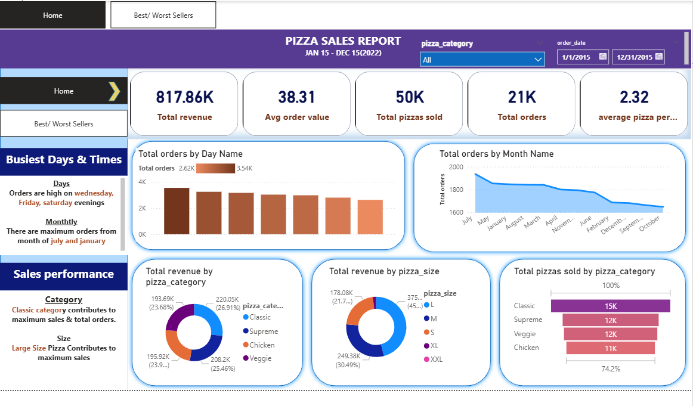

Business performance analysis
A Power BI report that shows how one product line sells: 817.86K in revenue from 21K orders and 50K pizzas, with an average order value of 38.31. Charts break orders down by day and month, and revenue by pizza category and size.
The findings are written on the report itself. Orders peak on Wednesday, Friday and Saturday evenings, the Classic category brings in the most sales and orders, and large pizzas bring in the most revenue. Built with SQL and Excel.